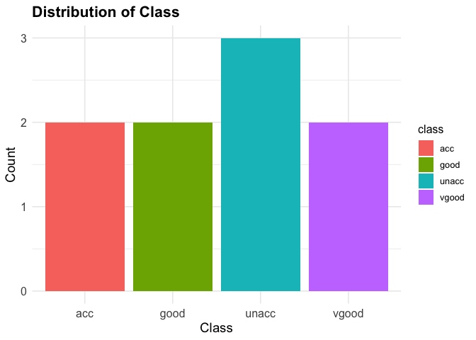
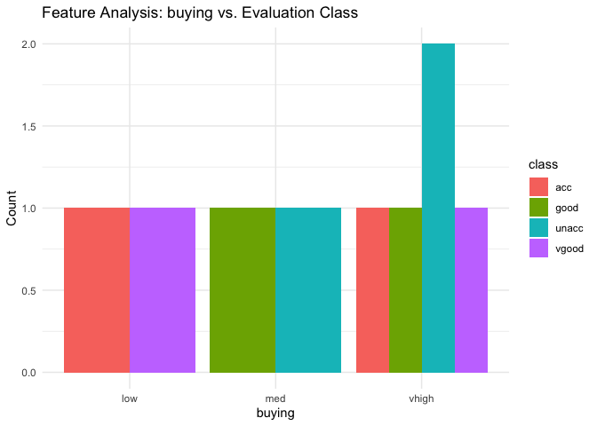
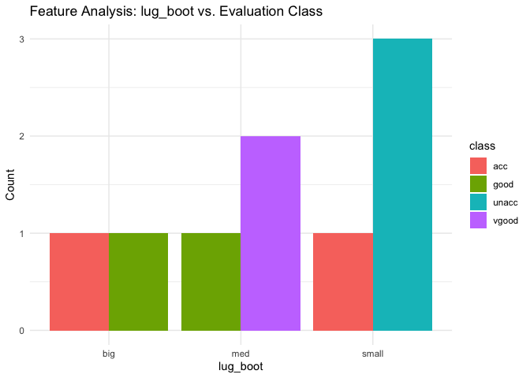

The goal of predictcarcategory is to provide tools for exploratory analysis and predictive modeling related to car evaluation categories. The package includes functions to generate bar plots for categorical features, train random forest models, and visualize confusion matrices.
Installation
You can install the development version of predictcarcategory from GitHub with:
# install.packages("pak")
pak::pak("DSCI-310-2025/predictcarcategory")Usage
A common task when dealing with car data involves creating a bar plot for one categorical variable, creating a list of bar plots comparing categorical features to the class target variable, training and testing a random forest model and creating a heatmap to visualize the confusion matrix. This is where functions like generate_barplot(), generate_feature_plots(), and analysis_model() and generate_confusion_matrix_heatmap() are useful.
library(predictcarcategory)
# Sample dataset
df <- data.frame(
buying = c("vhigh", "vhigh", "vhigh", "vhigh", "vhigh", "low", "med", "low", "med"),
maint = c("vhigh", "vhigh", "vhigh", "vhigh", "vhigh", "low", "low", "med", "med"),
doors = c("2", "2", "2", "2", "2", "3", "3", "4", "5more"),
persons = c("2", "2", "2", "2", "2", "4", "4", "more", "more"),
lug_boot = c("small", "small", "small", "med", "med", "big", "big", "med", "small"),
safety = c("low", "med", "high", "low", "med", "high", "low", "med", "high"),
class = c("unacc", "unacc", "acc", "good", "vgood", "acc", "good", "vgood", "unacc")
)
generate_barplot(dataset = df, x = "class", x_name = "Class") generate_barplot() creates a bar plot to visualize the distribution of the target variable. It makes it easier to see how balanced or imbalanced the classes are within the dataset.
category_features <- c("buying", "maint", "doors", "persons", "lug_boot", "safety")
plot_list <- generate_feature_barplots(data = df, features = category_features)
# Display the first and second plot as an example
plot_list[[1]]
plot_list[[5]] generate_feature_barplots() creates a list of bar plots to visualize the relationship between the categorical variables and the target variable. It makes it easier to identify the trends and patterns.
Position in the R Package Ecosystem
The predictcarcategory package is a specialized tool in the R ecosystem designed to streamline exploratory data analysis (EDA) and predictive modeling for car evaluation classification problems. It provides easy-to-use functions for visualizing categorical data, training random forest models, and evaluating model performance. While general-purpose EDA packages (e.g., ggplot2, dplyr) and machine learning packages (e.g., caret, randomForest) offer broader tools for all kinds of datasets and tasks, predictcarcategory is specifically geared towards classification problems. It streamlines the workflow from data exploration to model evaluation with minimal user effort.